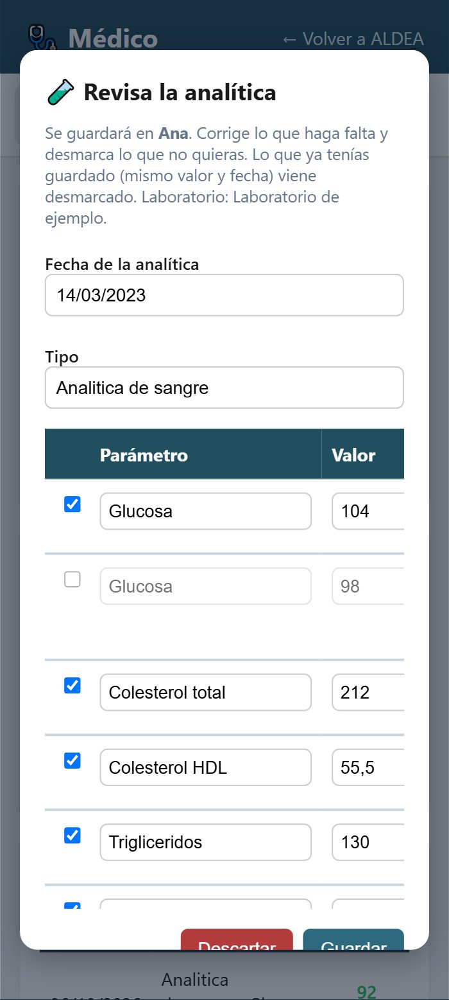
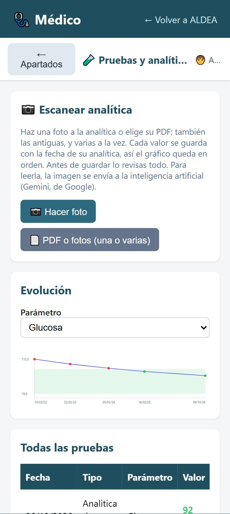
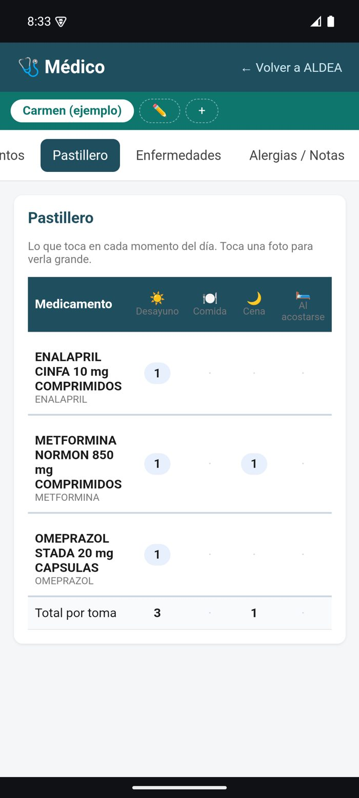

Manual › 📱 Manual de las aplicaciones
5.4 🩺 Salud
Personas. Al entrar eliges de quién son los datos: tú y tus familiares, cada uno con su tarjeta y sus propios datos. ➕ Añadir familiar da de alta a otra persona. Para eliminar a una persona: su tarjeta › Datos personales › Eliminar persona (borra todos sus datos y no se puede deshacer).
Apartados. Cada persona tiene sus apartados en tarjetas, agrupados en Día a día, Salud e Historial y datos, con un resumen (medicamentos en curso, próxima cita, última tensión…). Con ⚙️ Elegir qué apartados se muestran ocultas los que esa persona no necesita; no se borra nada.
| Apartado | Qué registras |
|---|---|
| 💊 Medicamentos | Qué toma, dosis y horario. Se rellena desde el registro oficial CIMA con el Código Nacional (6 cifras de la caja) o el nombre; con la IA, escaneando la caja. Opcional: aviso de caducidad y de fin de la caja. |
| 🗓️ Pastillero | Qué tomar en cada momento del día (desayuno, comida, cena y noche). |
| 📅 Próxima cita / 📋 Historial de citas | Fecha, especialista, motivo y resultado. |
| ⚠️ Alergias / Notas | Alergias, intolerancias, cirugías y preguntas para el médico. |
| 🩺 Enfermedades | Diagnósticos, con su variante o tipo y la zona del cuerpo. |
| 🧪 Pruebas y analíticas | Resultados con su rango de referencia y gráfica de evolución; escaneo de analíticas. |
| ❤️ Constantes | Tensión con pulso, peso con IMC, glucosa, temperatura y oxígeno. |
| 👩⚕️ Especialistas · 📁 Documentos · 📇 Datos personales | Médicos habituales; informes y recetas (PDF o foto); tarjeta sanitaria, contacto, peso, talla y función del riñón y del hígado. |
Medicamentos y la caja
- En Medicamentos, 📷 Añadir medicamento abre el formulario con la cámara a la vista.
- 📅 Avisarme antes de que caduque: útil para lo que guardas por si acaso. 📦 Avisarme cuando se vaya a acabar la caja: con las unidades y la pauta calcula cuándo se termina y avisa una semana antes. Al empezar otra caja, 🔄 Caja nueva.
- 📄 ver prospecto abre el prospecto completo, tal cual: información oficial de la AEMPS (CIMA).
ALDEA organiza tus medicamentos y recordatorios. No valora tratamientos. Consulta siempre a tu médico o farmacéutico.
Constantes: tensión, peso, glucosa, temperatura y oxígeno
- Elige arriba el tipo (Tensión, Peso, Glucosa, Temperatura, Oxígeno), escribe el valor, la fecha y la hora, y toca Guardar.
- Verás la última medida, la gráfica y, en la tensión, la media de 7 y de 30 días, que es lo que suele pedir el médico.
- El peso de Datos personales se actualiza solo con la última medida; con la talla se calcula el IMC (en menores de 18 años no se valora: se hace con las tablas del pediatra).
- 🖨️ Imprimir para el médico genera la tabla del historial. Toma la tensión sentado, tras 5 minutos de reposo.
Pruebas y analíticas: escanear una analítica
- En 🧪 Pruebas y analíticas, toca 📷 Hacer foto o 📄 PDF o fotos (una o varias). Sirven también las analíticas antiguas, y puedes elegir varias a la vez.
- La inteligencia artificial lee los valores. Cada uno se guarda con la fecha de su analítica (la de la extracción), no la de hoy; si el informe trae resultados anteriores, cada uno con la suya.
- Revisa la tabla antes de guardar: corrige lo que haga falta y desmarca lo que no quieras. Lo que ya tenías guardado viene desmarcado, para no duplicarlo.
- Toca Guardar. La foto o el PDF queda en Documentos y la gráfica de evolución se actualiza, con cada analítica a su distancia real en el tiempo.



Para escanear analíticas hace falta la inteligencia artificial. La imagen se envía a la empresa de IA que hayas elegido (Google, por defecto) para leerla; si el informe lleva tu nombre u otros datos personales, puedes taparlos o recortar la foto antes. Sin IA, los valores se apuntan a mano en Añadir prueba.
Ciclo (opcional)
Para mujeres de 8 a 60 años, un apartado discreto de seguimiento del ciclo (la regla). Sale en el menú de la persona como 🌸 Ciclo y no guarda nada hasta que se activa. Hace falta que en Datos personales estén el sexo y la fecha de nacimiento (basta el año). Son datos de salud sensibles y se guardan solo en el móvil; con el 🔒 Bloqueo de ALDEA (capítulo 11.2) nadie más puede verlos.

